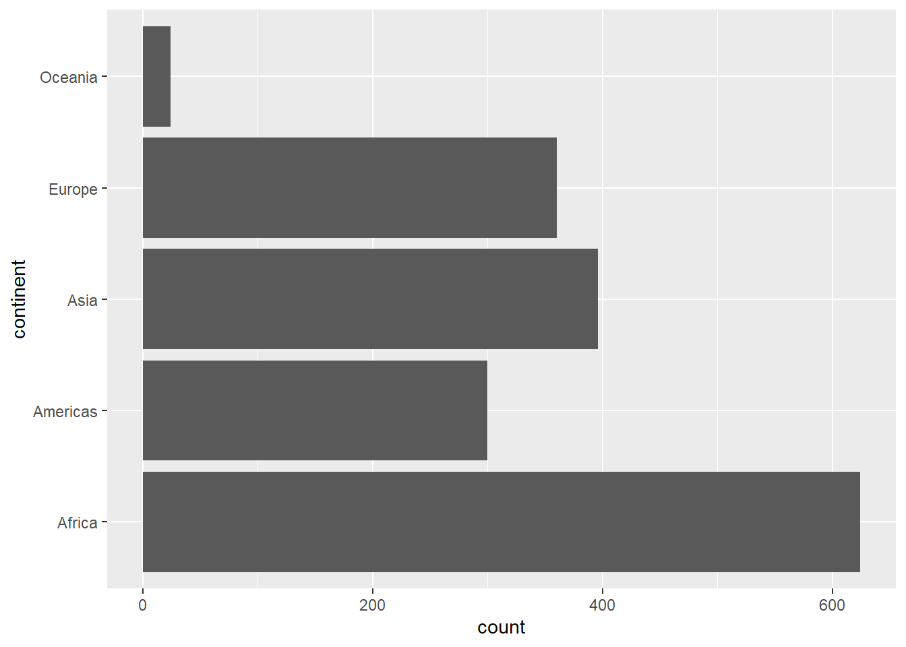

WiWi BrushUp Kurs 2022
Gapminder - Statistische Transformationen
Zielsetzung
Unser Ziel ist einfach.
Schritt 1: Plots durch statistische Transformationen mit ggplot2 generieren.
Schritt 2: Kunstwerke als NFTs verkaufen und reich werden.
Aufgaben
Wir gucken uns in dieser Lektion wieder den gapminder-Datensatz an. Falls die Packages tidyverse und gapminder nicht mehr geladen sind, so musst du wieder die folgenden Befehle ausführen.
Zunächst wollen wir erstmal zählen, wie oft welcher Kontinent in dem Datensatz gapminder vertreten ist. Erzeuge die folgende Grafik.

Afrika ist ein gigantisch großer Kontinent mit vielen Ländern. Da macht es nur Sinn, dass dieser Kontinent am häufigsten vorkommt. Als nächstes wollen wir uns anschauen, wie die dokumentierten Lebenserwartungen im gapminder-Datensatz verteilt sind. Hier wollen wir nicht nach Jahren oder sonstigen Merkmalen filtern. Wir wollen einfach die Verteilung aller verfügbaren Datenpunkte angucken. Erzeuge dafür das folgende Histogramm (geom_histogram() oder stat_bin() - falls du es vergessen haben solltest).
Ok, hier sieht es nun so aus, als gäbe es es zwei Peaks. Vielleicht sieht man das besser, wenn wir die Balkendiagramme schmaler machen (und somit mehr Balken verwenden). Dies können wir beeinflussen, indem wir Optionen verändern. Wir haben beim Ausführen von geom_histogram() bzw. stat_bin() die folgende Nachricht erhalten. Diese enthält einen Hinweis, welche Option wir verändern könnten, um mehr Balken in unserem Histogramm zu verwenden.
`stat_bin()` using `bins = 30`. Pick better value with `binwidth`.Wenn du diesen ausgeklügelten Hinweis entschlüsselt hast, dann erzeuge folgendes Histogramm, dass die entsprechende Option auf 100 setzt.
Anstatt die Anzahl von Balken beliebig hochzusetzen, können wir aber auch eine Wahrscheinlichkeitsdichtefunktion schätzen (Ihr erinnert euch hoffentlich aus eurer Stochastikgrundvorlesung, dass eine Dichtefunktion ein Merkmal einer stetigen Verteilung ist). Das entspricht quasi einem Histogramm mit “unendlich dünnen Balken”. Ersetze dafür geom_histogram() durch stat_density() (ohne Optionen).

Sieht ähnlich aus wie unser Histogramm oder? Im Prinzip ist das eine Art “stetige Version” unserer Histogramme. Probiere auch geom_density() statt stat_density() zu verwenden. Dadurch solltest du erkennen, dass geom_density() andere geometrische Objekte (Fläche anstatt Linie) verwendet als stat_density(), um die gleichen berechneten Größen grafisch darzustellen. Wenn wir wollen, haben wir also die Freiheit dies nach unseren Wünschen anzupassen:
ggplot(data = gapminder, mapping = aes(x = lifeExp)) +
# size = 0.25, damit man auch einzelne Punkte erkennen kann
stat_density(geom = 'point', size = 0.25)
Da wir nun ein bisschen besser sehen, dass es hier zwei Peaks gibt, sollten wir dem auf den Grund gehen. Wir ahnen es vielleicht schon: Es gibt Regionen mit sehr hoher und Regionen mit sehr niedriger Lebenserwartung. Dies erzeugt die Mischung, die wir hier sehen. Wir könnten für Klarheit sorgen, indem wir unterschiedlichen Kontinenten unterschiedliche Farben zuordnen. Gucken wir uns zunächst einmal an, wie das am Ende aussehen könnte.

An diesem Plot habe ich schon einiges angepasst und wir werden das Schritt für Schritt nachbauen. Zunächst können wir aber schon mal feststellen, dass wir Recht hatten. Leider gibt es große Unterschiede zwischen den Kontinenten. Insbesondere Afrika weicht stark nach unten ab, was den linken Peak in unserer vorherigen Grafik erklärt.